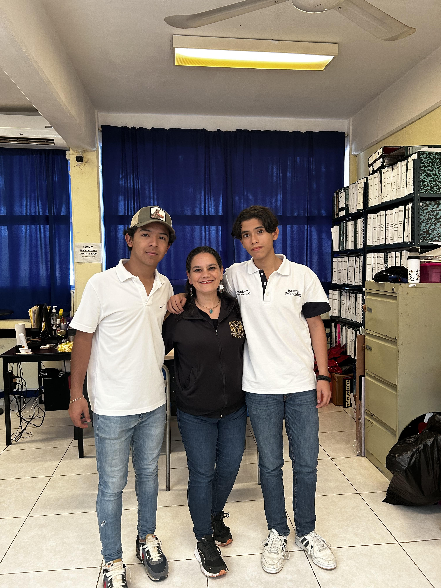

Entrevista académica con la directora del bachillerato "Universidad De Ciencias Y Tecnología Descartes"
Edgar Eduardo Conde Holgún y Arturo Trujillo Lombard
El pasado 25 de noviembre de 2023, los alumnos del semestre 1020, Edgar Eduardo Conde Holguín y Arturo Trujillo Lombard, llevaron a cabo una entrevista con la directora del bachillerato de la "Universidad de Ciencias y Tecnología Descartes", Irene Guadalupe Aguilar Molina. El propósito de esta entrevista fue conocer aspectos de su vida personal y académica, y compartirlos con la comunidad.
La Dra. Irene Guadalupe Aguilar Molina es contadora pública de la UNACH (Universidad Autónoma de Chiapas) con maestrías en finanzas e ingeniería de la educación, y un doctorado en educación. Comenzó como maestra en octubre de 2006 en la Universidad Descartes, impartiendo la materia "Capacitación Para El Trabajo". En 2009 asumió el cargo de coordinadora académica, y en julio de 2016 fue designada directora del bachillerato.
La directora compartió sus principales motivaciones como educadora, destacando que su parte favorita del bachillerato son los alumnos, ya que considera esta etapa como fundamental para escuchar y orientar a los estudiantes a lo largo de su trayecto académico. Los valores que guían su labor como directora son el compromiso, la responsabilidad, la pasión y el amor.
En cuanto a los desafíos, la Dra. Aguilar Molina mencionó que cada día representa un reto, especialmente debido a las diferencias entre las generaciones desde 2006 hasta la actualidad (2023). Destacó la complejidad de la contingencia, donde la adaptación a clases en línea fue un gran desafío tanto para el ámbito académico como social.
Entre los logros, resaltó haber sido representante consejera de la zona sursureste de México por parte de la UNAM durante la pandemia. Abordó la importancia de la innovación en la educación, tanto en la actualización de métodos de estudio para los docentes como en la creación de proyectos participativos para los estudiantes, como la cabina de lectura y la cuenta de Instagram "Radio Descartes".
La directora también compartió algunos proyectos en marcha, como el "Christmas Market", que busca familiarizar a los alumnos con las tradiciones culturales de estudiantes de intercambio. Subrayó la importancia de la comunicación entre docentes y padres, destacando las "Juntas de academia" y las "Escuelas para padres".
